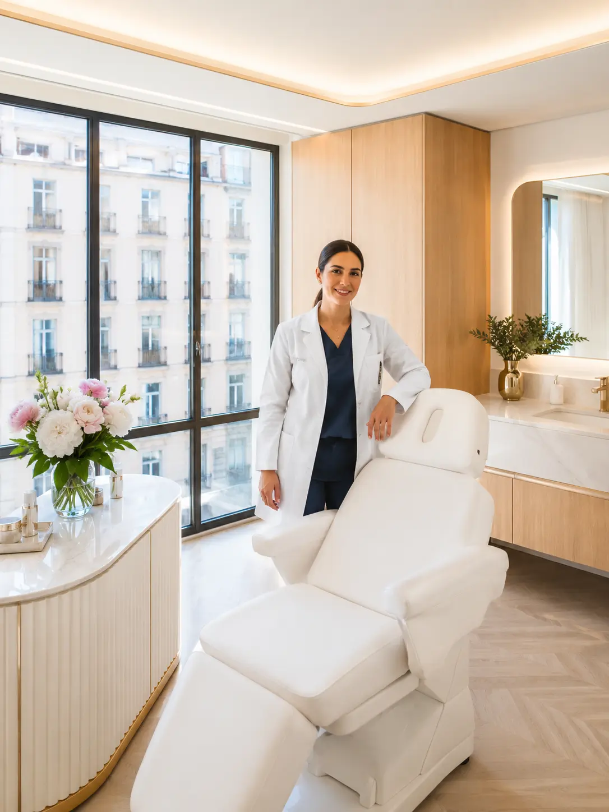

01
Rejuvenecimiento facial
Tratamientos orientados a mejorar la luminosidad, textura y firmeza de la piel con resultados progresivos y naturales.
Medicina estética en Madrid
En Clínica Lumina combinamos diagnóstico personalizado, tecnología estética avanzada y acompañamiento profesional para cuidar tu piel con seguridad y criterio médico.

Primera valoración
Plan personalizado para cada paciente
Tratamientos
Diseñamos planes personalizados para mejorar la calidad de la piel, suavizar signos de envejecimiento y acompañar cada tratamiento con criterio profesional.
01
Tratamientos orientados a mejorar la luminosidad, textura y firmeza de la piel con resultados progresivos y naturales.
02
Aplicación personalizada para hidratar, armonizar y recuperar volumen facial respetando la expresión natural.
03
Protocolo de higiene profunda, renovación y cuidado de la piel adaptado a cada tipo de rostro.
04
Programas personalizados para mejorar textura, firmeza y bienestar corporal con seguimiento profesional.
Beneficios
Cada tratamiento se plantea desde una valoración individual, con información clara y una búsqueda de resultados naturales.
Evaluamos las necesidades de cada paciente antes de proponer un tratamiento.
Priorizamos la armonía facial y corporal sin cambios artificiales o excesivos.
Explicamos cada paso del proceso para que tomes decisiones con seguridad.
Trabajamos en un entorno preparado para ofrecer comodidad, privacidad y atención cercana.
La clínica
Clínica Lumina nace con el objetivo de ofrecer tratamientos estéticos personalizados en un entorno moderno, tranquilo y orientado a la confianza del paciente.
Nuestro enfoque combina valoración individual, información clara y técnicas seleccionadas según las necesidades de cada persona. Buscamos acompañar cada decisión estética con criterio, seguridad y resultados coherentes con la identidad natural de cada paciente.
Testimonios
Opiniones ficticias basadas en situaciones habituales de pacientes que buscan información clara, acompañamiento y resultados naturales.
“Me explicaron cada paso antes del tratamiento y sentí mucha tranquilidad. El resultado fue sutil, justo lo que buscaba.”
“Valoré mucho que no intentaran venderme más de lo necesario. Me propusieron un plan claro y adaptado a mi piel.”
“El trato fue profesional y cercano desde la primera valoración. Me sentí escuchada y bien orientada.”
Preguntas frecuentes
Resolvemos algunas dudas habituales para que puedas contactar con la clínica con más seguridad y claridad.
Sí. Nos permite conocer tus objetivos, revisar el estado de la piel y recomendar un tratamiento adecuado a tu caso.
Depende del tratamiento. Algunos cambios pueden apreciarse antes, pero otros requieren evolución progresiva y seguimiento profesional.
Sí. Puedes contactar con la clínica para resolver dudas iniciales antes de solicitar una cita de valoración.
En muchos casos sí. Te explicaremos las recomendaciones necesarias antes y después de cada procedimiento.
Clínica Lumina es una clínica ficticia situada en Madrid, creada como proyecto de portfolio frontend.